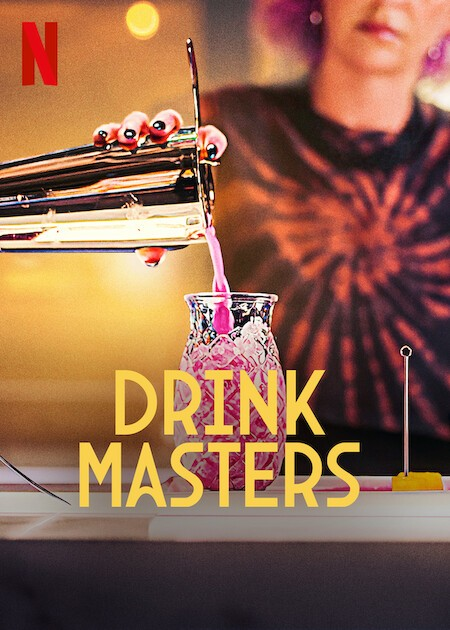

Mixology Guide
Learn the art of mixology through essential techniques, expert inspiration, and curated content that helps you explore cocktails beyond the glass.
Watch & Learn
Discover the essential tools every home bartender should have and learn how to use them to elevate your cocktail-making experience.
Understanding Flavour Balance
A great cocktail is all about balance. Understanding the five basic tastes helps you create drinks that are more complex and enjoyable.
-
Sweet: adds smoothness and balances strong flavours.
Example: Sugar syrup in a Mojito or Piña Colada. -
Sour: brings freshness and brightness to the drink.
Example: Lime juice in a Margarita or Mojito. -
Bitter: adds depth and complexity.
Example: Bitters in an Old Fashioned or Aperol in a Spritz. -
Salty: enhances and amplifies other flavours.
Example: Salt rim in a Margarita. -
Umami: adds richness and a savoury note.
Example: Tomato juice in a Bloody Mary.
The key to mixology is finding the right balance between these elements to create a harmonious drink.
Series Recommendation

For a deeper dive into modern mixology, Drink Masters on Netflix showcases creativity, technique, and storytelling through cocktails. The series highlights how bartenders transform simple ingredients into unique and expressive drinks.
Why Mixology Matters
Mixology is more than making drinks — it is about understanding flavour, culture, presentation, and experience. Every cocktail tells a story through its ingredients, origin, and the way it is served.